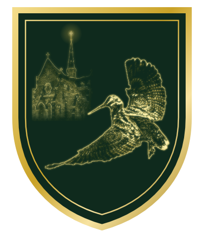

CynéScout
Suivre une battue de chasse en temps réel
CynéScout permet aux chasseurs, fusils et rabatteurs d'une même battue de voir les positions de chacun sur la carte du territoire, de signaler un animal, un danger ou un tir, de suivre les traques et de tenir les cotisations. Les spectateurs peuvent suivre la journée sans envoyer leur position.
Bien démarrer
- Saisissez le code du territoire donné par votre équipe de chasse, ou créez votre territoire.
- Onglet Rejoindre une chasse : saisissez le code du jour, votre nom et votre rôle. Les actionnaires cochent « Je suis actionnaire » et saisissent leur code.
- Autorisez la localisation « Toujours » pour rester visible téléphone en poche. La position n'est envoyée que pendant la journée de chasse.
Questions fréquentes
Je suis grisé sur la carte avec « il y a 10 min ». Votre téléphone n'a plus de réseau, ou l'iPhone a mis l'application en pause. Vérifiez que la localisation est sur « Toujours » et que le mode économie d'énergie est désactivé.
« Code actionnaire incorrect ». Vérifiez le code auprès de votre territoire ; il change en général à chaque saison.
Supprimer mes données. Écrivez-nous en indiquant le territoire, la date et le nom utilisé : voir la politique de confidentialité.